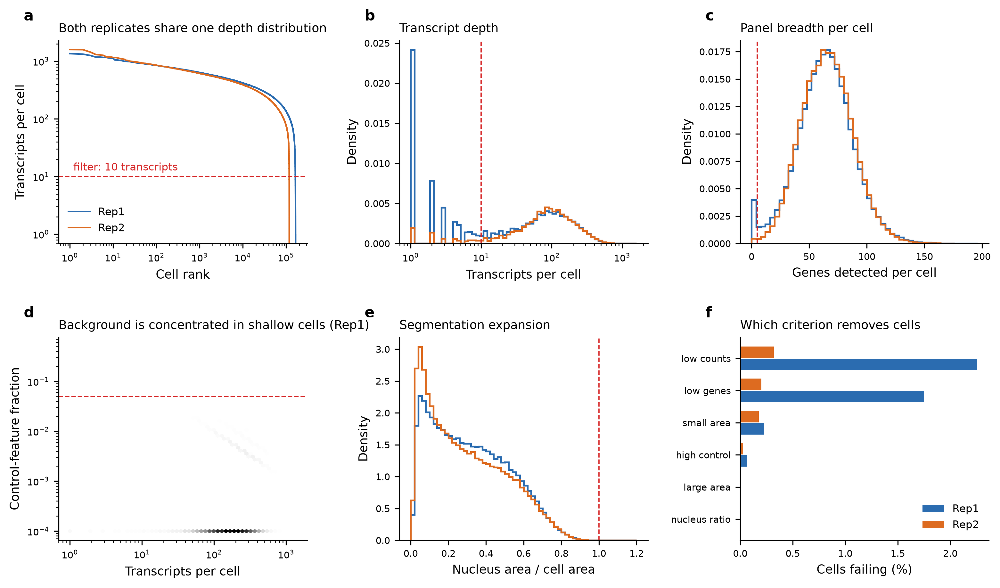
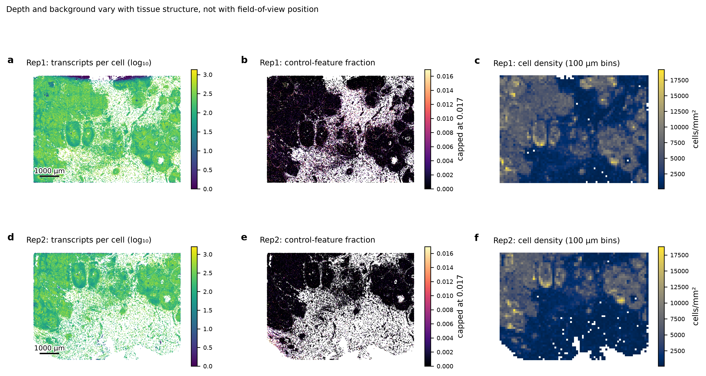
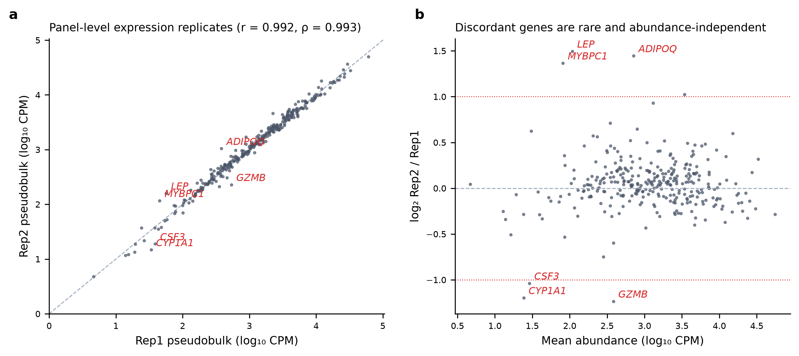

1 · Quality control
Quality control: what to trust before anything else
Per-cell, per-run and position-aware checks across two replicate sections, with explicit pass/fail criteria.
Quality control for in situ data is not one question but three, and they are worth keeping apart because they fail for different reasons and have different remedies. Is this cell real? is a filtering problem. Is this run usable? is a go/no-go decision about the slide. Is the defect regional? is the question that distinguishes a tissue gradient from a decoding or imaging artefact, and it is the one most often skipped.
The criteria, stated before the data
Every threshold below is read from config/config.yaml, written into
results/tables/qc_thresholds.csv next to the verdict it produced, and applied
identically to both sections. Nothing was tuned after seeing the outcome.
| Per-cell criterion | Cells failing, Rep1 | Cells failing, Rep2 |
|---|---|---|
| Fewer than 10 transcripts | 2.25% | 0.32% |
| Fewer than 5 genes detected | 1.75% | 0.20% |
| Cell area < 15 µm² | 0.23% | 0.18% |
| Cell area > 1500 µm² | 0.00% | 0.00% |
| Control fraction > 5% | 0.07% | 0.03% |
| Nucleus larger than its cell | 0.00% | 0.00% |
The criteria are deliberately permissive. On a targeted panel the dominant failure mode is not a noisy cell but an empty one — a segmentation mask with no transcripts in it — and a conservative depth floor removes those without discarding genuinely small immune cells, which is the error that quietly deletes the most interesting population in a tumour section.
Per-cell distributions

Run-level summary
Run metrics are recomputed from the count matrix rather than copied from the vendor summary, with the vendor value carried alongside so the two can be compared. The negative-control rate is the single most informative number on this table: it is the fraction of detected signal that is known to be false, and it bounds how much of any weak biological effect could be background.
| Metric | Rep1 | Rep2 |
|---|---|---|
| Segmented cells | 167,780 | 118,752 |
| Median transcripts / cell | 164 | 164 |
| Median genes / cell | 64 | 65 |
| Median cell area (µm²) | 140.3 | 148.7 |
| Negative-control probe rate | 0.00088 | 0.00038 |
| Negative-control codeword rate | 0.000066 | 0.000059 |
| Transcripts assigned to a cell (vendor) | 0.932 | 0.911 |
| Cells passing all per-cell criteria | 0.9755 | 0.9949 |
| Run verdict | PASS | PASS |
Both runs pass every criterion. Negative-control probes account for 0.088% and 0.038% of panel signal respectively — roughly one false transcript in a thousand — and negative-control codewords, which report decoding error rather than probe non-specificity, are an order of magnitude rarer still. The cell yield differs substantially between sections (167,780 versus 118,752), but this tracks the amount of tissue on the slide rather than any difference in run quality: median depth and median panel breadth per cell are identical.
Is any defect regional?
A run-level average can hide a bad corner. The test here is spatial autocorrelation: bin the section into 100 µm squares, compute Moran's I for each technical metric on the queen-contiguity grid, and ask whether the metric clusters in space more than a random relabelling of the same bins would produce. A technical artefact — a defocused tile, a decoding dropout, a fluidics streak — produces strong, blocky autocorrelation aligned to instrument geometry. Tissue produces strong autocorrelation too, but shaped like tissue.
| Metric | Moran's I, Rep1 | Moran's I, Rep2 |
|---|---|---|
| Cell density (cells/mm²) | 0.785 | 0.824 |
| Median transcripts per cell | 0.572 | 0.456 |
| Fraction of cells passing QC | 0.675 | 0.214 |
| Median control-feature fraction | 0.355 | 0.009 |

Cell density is the most strongly autocorrelated metric (I = 0.82), which is exactly what a tissue with dense epithelial nests and sparse stroma should produce. Control-feature background is the least structured (I = 0.01 in Rep2) — the signature of background that is uniform across the slide. Crucially, none of the maps show rectangular blocks or straight-edged discontinuities. The depth structure follows curved tissue boundaries, so the correct action is to account for cell type when interpreting depth, not to mask a region or re-run the slide.
Moran's I on a binned grid detects regional structure; it does not attribute it. A defect perfectly confounded with a tissue boundary would be indistinguishable from biology by this test alone. Registering the DAPI image against an H&E section and inspecting the flagged bins directly is the next check, and it needs the morphology image that is not part of this public bundle.
Do the two replicates agree?
This is the arm that a single-section analysis cannot have. Two serial sections of the same block were processed as independent runs, so any difference between them is technical by construction — sectioning, hybridisation, imaging, decoding — and sets a floor on the effect size worth believing from one section.

Agreement is high (r = 0.992, ρ = 0.993), and the 7 genes that do differ by more than two-fold are informative: the largest discordances are in LEP, ADIPOQ, MYBPC1 and GZMB. These are markers of adipose and skeletal-muscle tissue — structures that are present in one section plane and absent from the other. That is a sectioning difference, not a run-quality difference, and it is the clearest possible demonstration of why a fold-change from a single section should not be read as biology without a replicate to anchor it.
The practical output of this stage is a number to calibrate against: on this tissue, a two-fold pseudobulk difference between sections of the same block is achievable from sectioning alone. Any cross-sample claim smaller than that needs more than one section per sample to support it.